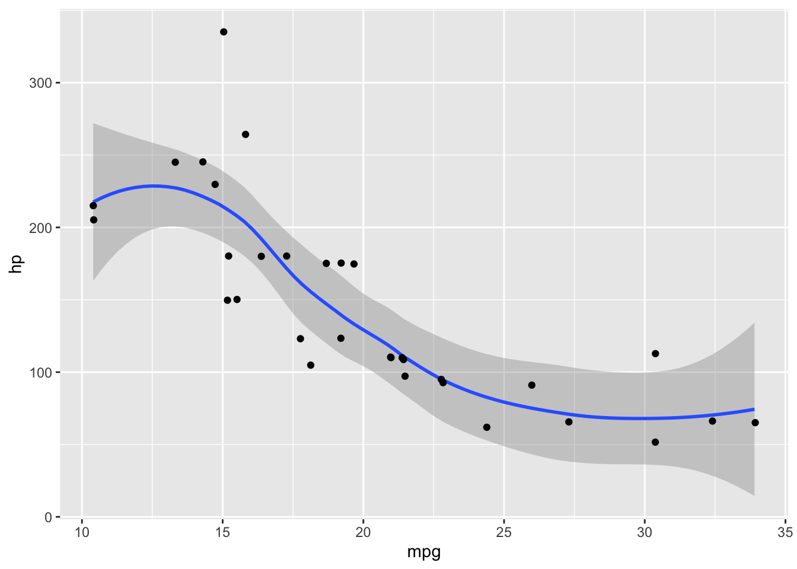

Code
library(ggplot2)
ggplot(data = mtcars, aes(x = mpg, y=hp)) +
geom_smooth() +
geom_jitter()`geom_smooth()` using method = 'loess' and formula 'y ~ x'Playing with quarto settings to learn more about how it works.
Karat Sidhu
June 6, 2022
I decided to start working with Quarto for majority of my writing needs and have been experimenting with its various features, formatting and quirks. I am by no means anywhere close to an expert, however, with this write-up I hope to help out anyone starting out working with QMD files. This is a few small tips and notes (mostly for me) to use as a reference.
QMD works similar to markdown so basic markdown syntax1 applies for formatting text.
A lot of Quarto users are coming from RMarkdown, so formatting locations feel familiar and different at the same time. Code chunks format locations are inside the cells preceded with a #|, at the beginning of each code block.
A simple example of this behavior:
```{r}
#| code-fold: true
#| label: fig-mtcars
#| fig-cap: "Fig. 1 Mpg and hp of Cars"
library(ggplot2)
ggplot(data = mtcars, aes(x = mpg, y=hp)) +
geom_smooth() +
geom_jitter()
```which generates the following output:
`geom_smooth()` using method = 'loess' and formula 'y ~ x'Figure caption, code folding are applied from the commands in the first line of the code block.
In certain situations, be it for aesthetics or to maximize the use of whitespace, Quarto allows the user to place content including figures, tables, captions etc on the “margin” area.
The syntax to add a figure to the margin is:
| mpg | cyl | disp |
|---|---|---|
| 21.0 | 6 | 160 |
| 21.0 | 6 | 160 |
| 22.8 | 4 | 108 |
| 21.4 | 6 | 258 |
| 18.7 | 8 | 360 |
| 18.1 | 6 | 225 |
`geom_smooth()` using method = 'loess' and formula 'y ~ x'
Additionally, captions, comments and text blocks can be added to the margin area in the output.
To extend the functionality, qmd files also allow us to ignore margins altogether by adding column:screen function to the code chunk. This can result in great looking articles and blogs by adding functions.
Using screen fill function, here is a map of NYC embedded into the blog.
library(leaflet)
leaflet() %>%
addTiles() %>% # Add default OpenStreetMap map tiles
addMarkers(lat=40.7128, lng=-74.0060, popup="NY City")Further, content can be filled partially on the screen.
| mpg | cyl | disp | hp | drat | wt | qsec | vs | am | gear | |
|---|---|---|---|---|---|---|---|---|---|---|
| Mazda RX4 | 21.0 | 6 | 160 | 110 | 3.90 | 2.620 | 16.46 | 0 | 1 | 4 |
| Mazda RX4 Wag | 21.0 | 6 | 160 | 110 | 3.90 | 2.875 | 17.02 | 0 | 1 | 4 |
| Datsun 710 | 22.8 | 4 | 108 | 93 | 3.85 | 2.320 | 18.61 | 1 | 1 | 4 |
| Hornet 4 Drive | 21.4 | 6 | 258 | 110 | 3.08 | 3.215 | 19.44 | 1 | 0 | 3 |
| Hornet Sportabout | 18.7 | 8 | 360 | 175 | 3.15 | 3.440 | 17.02 | 0 | 0 | 3 |
| Valiant | 18.1 | 6 | 225 | 105 | 2.76 | 3.460 | 20.22 | 1 | 0 | 3 |
To draw attention towards something in the text, a block of text call be used as a callout blog in Quarto.
Inline code
renders the following output
Note: This is a callout of type note
Other types of callouts like warning, tip and important are also built in for multiple types of callout blocks.
This is an example of a callout with a caption.
Acknowledgments section can be added to the end of article/text by using the .appendix command. It will appear at the end of the article/blog with footnotes and citations,etc. formatted as a smaller text font.
This is the sample text for the acknowledgement section. I made use of the Official Quarto documentation to help me with writing this post.
https://www.markdownguide.org/basic-syntax/↩︎